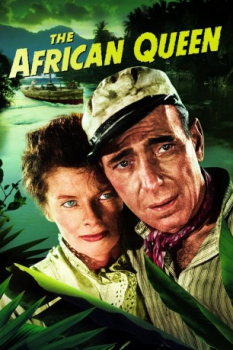
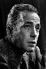

Country:United Kingdom, 105 minutes
Spoken languages:English
Genres:Romance, Adventure
Director(s):John Huston
Writer(s):C. S. Forester, James Agee, John Huston
Video Codec:Unknown
Number: 2784


Certification:
Storyline:
At the start of the First World War, in the middle of Africa’s nowhere, a gin soaked riverboat captain is persuaded by a strong-willed missionary to go down river and face-off a German warship.
Cast: 
Medium: VHS tape,
Loaned: No
Aspect ratio: Unknown